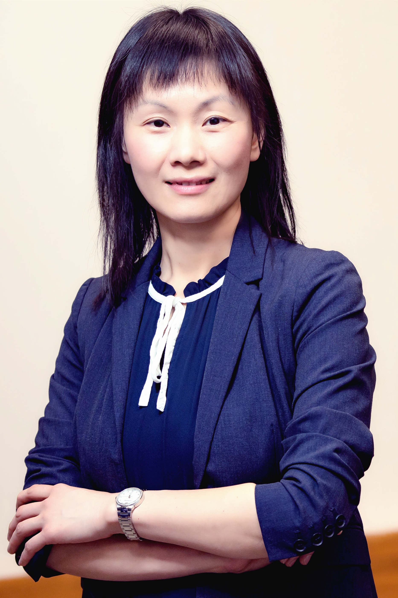

KDD'20 Tutorial
KDD2020 Tutorial: Multi-modal Network Representation Learning
PST Time: 1-5PM, Sunday, August 23rd, 2020
Location: Breakout Sessions --> Lecture Style Tutorial --> 29: Multi-modal Network Representation Learning
Description
In today’s information and computational society, complex systems are often modeled as multi-modal networks associated with heterogeneous structural relation, unstructured attribute/content, temporal context, or their combinations. The abundant information in multi-modal network requires both a domain understanding and large exploratory search space when doing feature engineering for building customized intelligent solutions in respond to different purposes. Therefore, automating the feature discovery through representation learning in multi-modal networks has become essential for many applications. In this tutorial, we systematically review the area of multi-modal network representation learning, including a series of recent methods and applications. These methods will be categorized and introduced in the perspectives of unsupervised, semi-supervised and supervised learning, with corresponding real applications respectively. In the end, we conclude the tutorial and raise open discussions. The authors of this tutorial are active and productive researchers in this area.
Keywords: Multi-modal network, Network representation learning, Deep learning
Content
Part 1: Introduction and Overview (Nitesh Chawla) [slide]
Part 2: Supervised Methods and Applications
-
2-1: User and behavior modeling (Meng Jiang) [slide]
-
2-2: Cybersecurity and health intelligence (Yanfang Ye) [slide]
-
2-3: Relation learning (Chuxu Zhang) [slide]
Part 3: Semi-supervised Methods and Applications
-
3-1: Attributed network embedding (Xiangliang Zhang) [slide]
-
3-2: Graph alignment (Xiangliang Zhang) [slide]
Part 4: Unsupervised Methods and Applications
-
4-1: Heterogeneous graph representation learning (Chuxu Zhang) [slide]
-
4-2: Graph neural network for dynamic graph and unsupervised anomaly detection (Meng Jiang) [slide]
Part 5: Conclusions (Chuxu Zhang) [slide]
Presenters
Chuxu Zhang is an Assistant Professor in the Department of Computer Science at the Brandeis University. His research interests are data mining, machine learning, deep learning, and their applications in graphs/networks mining, recommendation/personalization, interdisciplines, time series/spatial-temporal data analysis. His work have appeared in premier data mining and artificial intelligence conferences including KDD, WWW, AAAI, IJCAI. He serves as the conference PC member in NeurIPS, ICLR, KDD, AAAI, IJCAI, and the journal reviewer for TKDE, TKDD, TNNLS.
Meng Jiang is an Assistant Professor in the Department of Computer Science and Engineering at the University of Notre Dame. His research interests include data mining, machine learning, and information extraction. His research work focuses on computational behavior modeling. He has published over 50 conference and journal papers of the topics. His work was recognized as ACM SIGKDD 2014 Best Paper Finalist. He has delivered six tutorials in conferences such as KDD, SIGMOD, WWW, CIKM, and ICDM. He is the recipient of Notre Dame Global Gateway Faculty Award.
Xiangliang Zhang is an Associate Professor of Computer Science and directs the Machine Intelligence and Knowledge Engineering (http://mine.kaust.edu.sa) group at KAUST, Saudi Arabia. Dr. Zhang’s research mainly focuses on learning from complex and large-scale streaming and graph data. Dr. Zhang has published over 100 research papers in referred international journals and conference proceedings, including TKDE, SIGKDD, AAAI, IJCAI, ICDM, VLDB J, ICDE etc. Dr. Zhang is selected and invited to deliver an Early Career Spotlight talk at IJCAI-ECAI 2018.

Yanfang (Fanny) Ye is the Theodore L. and Dana J. Schroeder Associate Professor in the Department of Computer and Data Sciences (CDS) at Case Western Reserve University (CWRU). Her research mainly focuses on data mining, machine learning, cybersecurity and health intelligence. Before joining CWRU, she was an assistant professor and then associate professor in the department of computer science and electrical engineering (CSEE) at West Virginia University (2014-2019); She was the Principal Scientist in Comodo Security Solutions, Inc. (2010-2013) and formerly the R&D Deputy Director at Kingsoft Internet Security Corporation (2008-2010). Her research has been significantly supported by multiple federal agencies. She recently received the prestigious NSF Career Award (2019) and IJCAI Early Career Spotlight (2019), the AICS 2019 Challenge Problem Winner, the ACM SIGKDD 2017 Best Paper Award and ACM SIGKDD 2017 Best Student Paper Award (Applied Data Science Track), the IEEE EISIC 2017 Best Paper Award, and the New Researcher of the Year Award (2016-2017) at WVU.
Nitesh V. Chawla is the Frank M. Freimann Professor in the Department of Computer Science and Engineering at the University of Notre Dame and the Director of the Center for Network and Data Science (CNDS) at Notre Dame. His research focuses on machine learning, AI and network science fundamentals and interdisciplinary applications. He is passionate on interdisciplinary collaborations to address the grand challenge problems for societal impact. His papers have received several best paper nominations and awards. He is also the recipient of several awards and honors including IEEE CIS Outstanding Early Career Award, the IBM Watson Faculty Award, the IBM Big Data and Analytics Faculty Award, the National Academy of Engineering New Faculty Fellowship, and 1st Source Bank Technology Commercialization Award. In recognition of the societal and impact of his research, he was recognized with the Rodney Ganey Award and Michiana 40 Under 40. He is the director of Interdisciplinary Center for Network Science and Applications (iCeNSA) and founder of Aunalytics, a data science software and solutions company.
Last update in 8/2020